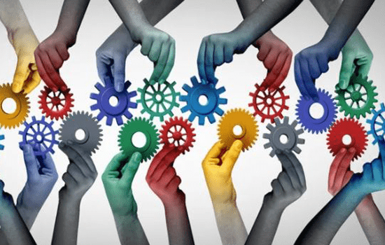

ONG Desiguais!
Sejam bem-vindos e bem-vindas ao espaço virtual da nossa ONG Desiguais!!
Somos uma Organização Não Governamental que acredita que as pessoas deficientes precisam de maior apoio para trilhar o caminho acadêmico com equiparação aos demais estudantes tanto para ingressar, quanto para permanecer e se formar nas Universidades Federais do Brasil.
Idealizamos diversos projetos para auxiliar a população deficiente, pois o objetivo da nossa ONG é fornecer suporte, recursos e orientação para pessoas que estão nesse contexto. Queremos ajudá-los a superar as barreiras que enfrentam, como a falta de acessibilidade, entre outros.
Estamos comprometidos em promover a inclusão social e a equiparação de oportunidades para as pessoas com deficiência. Trabalhamos em parceria com outras organizações, instituições de ensino e órgãos governamentais para alcançar nossos objetivos.
Nossa Missão, Visão e Valores
O Brasil tem uma vasta população de pessoas com deficiência. No entanto, tais pessoas enfrentam diversas barreiras e desafios para acessar a educação superior, especialmente nas Universidades Federais, que são instituições públicas.
O objetivo da nossa ONG é fornecer suporte, recursos e orientação para pessoas com deficiência que desejam ingressar e permanecer nas Universidades Federais do Brasil. Queremos ajudá-los a superar as barreiras que enfrentam, como a falta de acessibilidade, preconceito, descaso e discriminação.
Estamos comprometidos em promover a inclusão social e a igualdade de oportunidades para as pessoas com deficiência. Trabalhamos em parceria com outras organizações, instituições de ensino e órgãos governamentais para alcançar nossos objetivos.
Histórico de Atuação
A ONG Desiguais atua desde 2010 com foco na acessibilidade e apoio educacional para pessoas com deficiência. Em seus 15 anos de existência, mais de 2 mil estudantes foram beneficiados diretamente por nossos programas de mentoria e bolsas de estudo.
O projeto tem parcerias com as 68 universidades federais distribuídaas em todo o país. Segundo dados internos da organização, 78% dos assistidos** conseguiram concluir o ensino superior em até 6 anos. Destes, 40% ingressaram em cursos de pós-graduação.
A maioria dos formandos relata melhoria significativa na autoestima, inclusão e inserção no mercado de trabalho.
A ONG também promove ações de conscientização sobre inclusão no ambiente acadêmico. Em 2024, realizamos mais de 90 palestras e oficinas nas universidades federais, alcançando um público de aproximadamente 25 mil pessoas.
O objetivo é continuar ampliando o acesso e quebrando barreiras para estudantes com deficiência em todo o Brasil.
Relatório de Transparência e Desempenho, ano 2024
O relatório detalhado do desempenho da ONG Desiguais no ano de 2024 está disponível para download. Este documento inclui métricas chave e análises de impacto.
Clique aqui para baixar o Relatório 2024
Nossa Equipe da Diversidade
Nossa equipe é composta por profissionais dedicados e apaixonados pela causa da inclusão educacional. Valorizamos a diversidade e acreditamos que diferentes perspectivas enriquecem nosso trabalho.
Contamos com educadores, psicólogos, assistentes sociais, especialistas em acessibilidade, além de voluntários comprometidos que colaboram para o sucesso de nossos projetos.
Estamos sempre abertos a novas parcerias e colaborações. Se você deseja fazer parte da nossa equipe ou contribuir de alguma forma, entre em contato conosco!

Nossa estrutura:
Diretoria Executiva: Responsável pela gestão geral da ONG, definição de estratégias e supervisão dos projetos.
Coordenação de Projetos: Equipe dedicada ao planejamento, execução e monitoramento dos projetos de inclusão educacional.
Equipe de Voluntários: Grupo de pessoas que oferecem seu tempo e habilidades para apoiar nossas iniciativas.
Setor de Comunicação: Responsável pela divulgação das atividades da ONG, gestão das redes sociais e relacionamento com a comunidade.
Equipe de Apoio Psicossocial: Profissionais que oferecem suporte emocional e orientação para os beneficiários dos nossos programas.
Entre em contato conosco!
Estamos aqui para ajudar! Se você tiver alguma dúvida, sugestão ou precisar de mais informações sobre a ONG Desiguais, não hesite em entrar em contato conosco. Você pode nos enviar um e-mail ou ligar:
Nossa equipe está pronta para responder suas perguntas e fornecer o suporte necessário. Esperamos ouvir você em breve!
E-mail: contato@desiguais.org.br
Telefone/Whatsapp: (81) 91234-5678.
Redes Sociais:Facebook Instagram Twitter